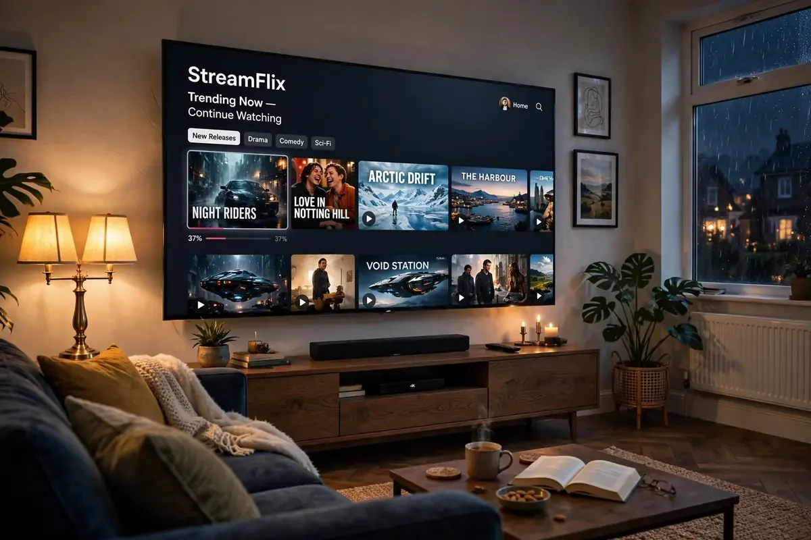

How to Set Up IPTV on Samsung & LG Smart TVs (2026 Guide)

Setting up IPTV on a Samsung Smart TV (or LG) works differently from Firestick — there's no sideloading, so everything happens through official app-store players. This 2026 guide covers both brands step by step.
Option 1: App-store IPTV players (no extra hardware)
On Samsung (Tizen) open the app store and install Smart IPTV, IPTV Smarters or Flix IPTV. On LG (webOS) the same apps are available in the LG Content Store. Launch the app, note the MAC address it shows, then visit the app's website on your phone to upload your M3U playlist link against that MAC. Restart the app — your channels load automatically. If the guide stays empty, our EPG not loading fix covers the usual causes.
Option 2: The Firestick shortcut
Honestly? Most Samsung/LG owners end up plugging in a £35 Firestick. You get better apps (TiviMate doesn't exist on Tizen/webOS), faster EPG, and simpler setup — see our Firestick installation guide. One HDMI port, ten minutes, done.
Tips for the best picture
Enable Game Mode or PC mode to cut input lag on live sport, turn off motion smoothing for football (it creates artefacts on fast pans), and use 5 GHz Wi-Fi or Ethernet — Smart TV Wi-Fi chips are weaker than a Firestick's. If streams stutter, run through our buffering fixes.
Either route takes under 15 minutes. Grab a free trial and test your exact TV model before buying — that's what the trial is for.
Smart IPTV vs IBO Player vs SS IPTV: which app?
Three app-store players dominate Samsung and LG TVs. Smart IPTV (SIPTV): the veteran — reliable, MAC-based activation, one-time ~£5 fee after trial. IBO Player: the modern favourite — slicker interface, better EPG, similar one-time activation fee. SS IPTV: completely free, slightly more manual setup. For most UK users we recommend IBO Player in 2026: best balance of looks, EPG quality and price. All three activate the same way — upload your M3U link against the TV's MAC address on the player's website.
Ready to watch in 4K?
Plans from £20 with instant activation and a 24-hour free trial.